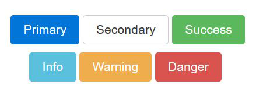
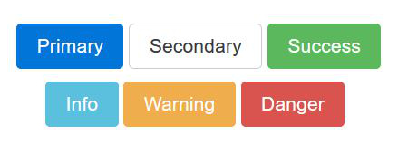
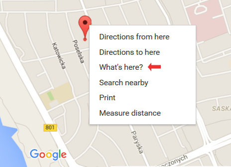
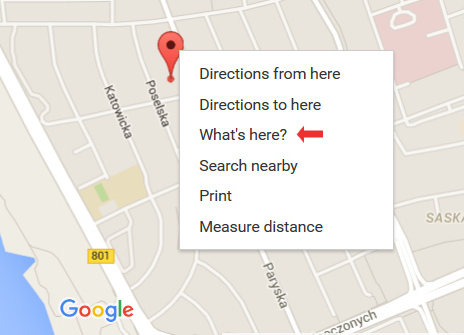
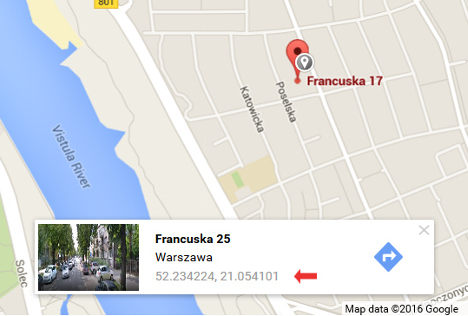
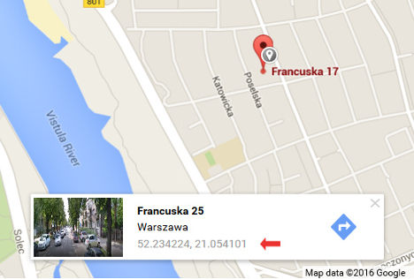

Welcome to LIVET Website-Documentation - By Vivek Kumar Verma
Thank you for viewing our website. This documentation page was created to help you with the installation and editing process. With this documentation your new website will be up and running in no time with minimal effort.
About LIVET
LIVET is a versatile one page website build with Bootstrap. It is perfect for digital agencies, startups, personal websites, designer portfolios and for other creative minds.
Your visitors will appreciate the single page design, because it's simple,fast loading, easy to navigate and perfect to be viewed on mobile devices.
Main Features
- Built with Bootstrap 4
- One page design
- HTML5 & CSS3
- Fully responsive / Mobile friendly
- Multi browser compatible
- Clean code
- Easy to use & customize
- Well documented
Getting Started
To make LIVET website truly yours all you will need is to edit some text on the page and add your own images. The editing process is very easy, just follow these steps:
- 1. Open folder containing LIVET files.
- 2. Open your favorite text editor, Notepad++ or Atom will do the job just fine.
- 3. Go to folder Livet and find index.html file, open it in a text editor.
- 4. Go to folder css and find file called main_style.css, open it in the text editor too.
- 5. To be able to see the changes, open index.html file in browser. When index.html will be opened in the browser, just hit the refresh button to see the changes made.
Next part will explain what our template is made of.
Structure
Our website was built with Bootstrap 4 which makes it easy to develop and maintain. Bootstrap is a HTML, CSS and JavaScript framework for making websites to look neat on all screen sizes. It's concentrated on making a website being a great experience for users on mobile devices.
Sections
LIVET being a one page website has a simple structure and cool look. It is made of sections which are treated as mini pages by search engines. Each section has a header, some text, images, buttons etc.
The website is made in the way that any existing section can be removed and new sections can be added. The best part of this is that it will have no side effects on website.
LIVET has six sections with relevant id's and classes:
- Header (#header)
- About (#about)
- Services (#services)
- Team (#team)
- Portfolio (#portfolio)
- Contact (#contact)
A section tag looks like this:

The only two special sections are nav and footer. Nav is at the top of the
page and is considered a navigation holding the links to all the sections on the page.
It can be customized, but shouldn't be removed altogether, as it would leave
your visitors with no quick way to navigate the website.
Therefore nav should be approached with caution.
Footer on the other hand is located at the very bottom of the page indicating
its end and as well as holding some useful information for visitors.
You can find navigation by the nav tag:

Bootstrap Grid
Bootstrap Grid is a great tool for laying out the content of the page in an easy way. Content can be laid out in any number of columns between 1 and 12. LIVET has a three column layout on desktop which turns into a 1 column layout on mobile screens.
Exception is the second grid in "Services" section which turns from 3 columns on desktop into 2 columns on tablets and then into 1 column on mobile screens.
The system is simple, there are rows which keep all the columns in one line and there are columns which are used for content placement. Columns have classes which define screen sizes and column width.
There are 5 classes for screen sizes:
- ".col-xs-" (mobile phones),
- ".col-sm-" (tablets),
- ".col-md-" (small laptops),
- ".col-lg-" (desktop),
- ".col-xl-" (extra large desktop).
Letters "xs", "sm", "md", "lg" and "xl" should be followed by a number which will tell the grid in how many columns to divide your layout.
The total/maximum amount of columns in Bootstrap Grid is 12 and they extend the whole width of the page. If you want to divide a page in two columns, you need to divide 12/2 and you will get 6. This is the number to add to after the size in a class name.
Don't get confused by the numbers, because even though a four column layout could be expected to have 4 at the end of a class, in fact it should have 3, because 12/4=3.
Four column layout on all screen sizes will have these classes: "col-xs-3", "col-sm-3", "col-md-3", "col-lg-3", "col-xl-3".
Let's say you want one of the LIVET grids to be divided in two columns on desktop instead of three. All you need to do is find class "col-md-4" and change it to "col-md-6".

One more tip, the columns don't always have to be identical in width, you can make one column width equal to 8 columns, the other to 4 (8+4=12). Classes would look like this: "col-md-8" and "col-md-4".
Bootstrap Carousel
Bootstrap Carousel is a jQuery plugin, used to display images or text as slideshow. Carousel consists of sliders (text or images), slider indicators (small dots at the bottom of a slider) and controls (arrows on both sides of a slider).
In addition to the listed components above Carousel with the testimonials in LIVET has stars which are just a part of our sliders contents. For more information on Bootstrap Carousel, please look into How To section.
How To
This section will help you to make any desired changes of the website. We added a solution to all the nessesary elements you might want to customize.
Navigation
If you wish to add some extra links to the navigation do the following:
In the index.html file find tag <nav>

Next go down to tag <ul> with the class "main-nav", underneath you will find a comment <!--Navigation links here -->.

To remove a link from navigation completely, delete the whole line from <li> to </li> tag.

To add a link, you need to copy the whole line from <li> to </li> tag, insert it above or underneath one of the existing lines with links and do the following changes. To change the name of the link which will be displayed on the website page, change this part of the line:

Then you need to change the name of the section you want to make a connection to in the <a> tag.

Images
You will need to add your own images to the website as the images in the live demo are for the demonstration purposes only.
Firstly, go to folder "Template" and add your photos to the folder
"images".
Next in the index.html file find the section you wish to add the image to
and find tag <img>

Some sections of LIVET such as "About", "Team" and "Portfolio" have some images set as backgrounds from main_style.css file. In this case you need to find the id of the section, then the class of the parent element and then change the image name and the format in the "background-image" property.

Headers
To change text of a header, find the section it belongs to, then find <h1> tag and edit the text.

If you do not wish the headers to be displayed in uppercase format just remove class "text-uppercase".

If you need to change some styling of the headers, go to main_style.css,
find h1 element and change the required properties.
For example to change the font, change the name of the font-family.

Icons
For LIVET we used Font Awesome and Linearicons vector icons to display as graphic indicators
as well as for the social buttons.
To add a Font Awesome icon, you need to create a span with the following classes:
"fa", which is a general class for Font Awesome icons,
name of the icon and the
size.
List of all available Font Awesome icons for your disposal can be found on Font Awesome website. Just copy the name of the icon and add it as class to the span.
To increase size of an icon use the following classes:
- fa-lg
- fa-2x
- fa-3x
- fa-4x
- fa-5x
To change color of a Font Awesome icon go to main_style.css file, find section you want to add an icon to, create a class with the name of the icon and set text color property to your desired color.

Here is an example of a span with a Font Awesome icon

To display a Linearicon icon is similar, the only difference is that not only color, but also size should
be declared in the main_style.css file.
General class is lnr and the list of all icons and their names can
be found on their website
Linearicons.
Original size of the Linearicons icons is 20px,
to achieve the best results increase
it by 20px increments,
so the next size should be 40px.

Here is an example of a span with a Linearicon icon.

Colors
To change a color of an element, go to main_style.css file,
find the element you want to edit and change its text color, background color,
border color property.
Here are some examples:


Fonts
LIVET website is using four different fonts.
- "Open Sans" (sans-serif) for Body Copy.
- "Hind" (sans-serif) for Section Headers.
- "Source Sans Pro" (sans-serif) for Buttons.
- "Lora" (serif) for h3 in Header Section.
All the fonts come from Google Fonts
and are free for everyone to use.
If you want to change a font, go to Google Fonts websites, select a font you like,
choose the font weight (or multiple font weights), copy link to the font
and past it in the head section of index.html file.

Next go back to Google Fonts and copy the name of the font and add it to the element you want to change the font of in the main_style.css file.

Buttons
Bootstrap has some ready to use classes to style buttons. First one is the general button class btn, it should be added first, then one of six color classes or outline classes.
 

- btn-primary
- btn-secondary
- btn-success
- btn-info
- btn-warning
- btn-danger


- btn-primary-outline
- btn-secondary-outline
- btn-success-outline
- btn-info-outline
- btn-warning-outline
- btn-danger-outline

There are many more useful classes to help you to style Bootstrap buttons,
all the needed information can be found on
Bootstrap website.
Alternatively you can add your own custom style to buttons.
LIVET buttons all have their own custom style.
Below is the styling for the buttons in the Header Section.


Portfolio items
LIVET Portfolio was built using Bootstrap grid. If you are not familiar with how Bootstrap Grid works, please refer to this section of the documentation first.
To display portfolio items in large size we used Bootstrap Modal Windows. When a portfolio item is clicked, it gives an impression as if a new page was opened, when in fact only an overlay window comes into the view. Modal windows have quite a bit of code and that's why we placed them after <footer>.
To add more items into Portfolio Section, you need to create the desired number of Portfolio images then create the same amount of new Modal Windows and connect them with each other.
To create a new image find Portfolio Section and a comment <!-- Start Portfolio Grid -->. The block of code between <!-- image 1 --> and <!-- end image 1 --> is one Portfolio image. Copy the block of code and past it as the next Portfolio image.

To create a new modal window, go to index.html file, find first modal window item and copy the whole code starting from the comment <!-- Modal 1 --> to the comment <!-- END Modal 1 -->. Then past this code as the next Modal Window item.
For detailed information on how Bootstrap Modal Windows work visit this page on Bootstrap website.

Map
To change information of the location in Google Map go to folder js and open file custom-scripts.js in the text editor. Find section marked with the comment /* Google Map JavaSctipt */ There you will need to add your coordinates.
To find coordinates of a place is simple, go to Google Maps, enter the address of the place, right click on the marker and click "What's here?"
 

A card with the coordinates of the latitude and longitude will appear.
 

Copy the numbers and past those here:

Credits
We used some awesome stuff for LIVET website and below are the credits to all the resources.
- Bootstrap - the most popular HTML, CSS, and JS framework for developing responsive, mobile first projects on the web.
- Google Fonts - beautiful Open Source (they are free!) fonts for designers and developers.
- Font Awesome - scalable vector icons that can be instantly customized.
- Linearicons - ultra crisp line icons with integrity.
- Pixels - best free stock photos in one place.